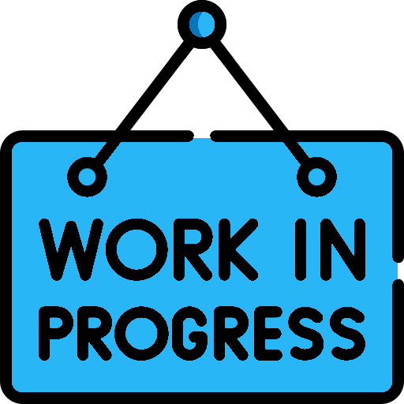

The pyEDAA.Reports Documentation¶
Proposal to define an abstract model for outputs from EDA tools and logging libraries.

Contributors¶
Patrick Lehmann (Maintainer)
Proposal to define an abstract model for outputs from EDA tools and logging libraries.

Patrick Lehmann (Maintainer)